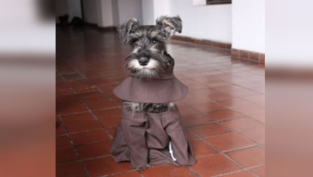

'Fray Carmelo', el cachorro boliviano vestido de monje que se volvió una celebridad en internet
Un perro schnauzer de seis meses que usa un hábito café y posa tranquilamente para la cámara se volvió una celebridad en internet luego de que sus fotos fueran publicadas en Facebook por el Proyecto Narices Frías, una organización que promueve la adopción de animales en Cochabamba, Bolivia.